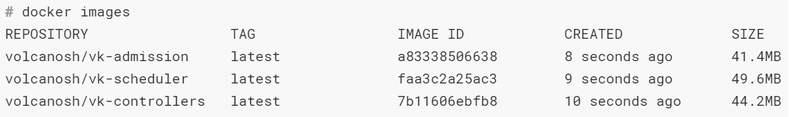
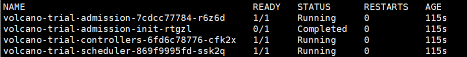

部署自己的volcano
搭建说明
有时候，我们需要对volcano二次开发，所有需要部署自己的volcano
准备工作
(1) 安装好 k8s集群
部署过程
（1）在go的安装目录下，创建volcano目录，并下载
mkdir -p $GOPATH/src/volcano.sh/
cd $GOPATH/src/volcano.sh/
git clone https://github.com/volcano-sh/volcano.git
PS: 这里是官网的volcano，你可以在这里修改，也可以git你自己的代码。
(2)在$GOPATH/src/volcano.sh/volcano目录执行 make images命令。这个是编译，并且生成新镜像
(3)docker images查看新生成的镜像

（4）将镜像改名，并上传到自己的dockerhub上去，这样是能自己能用到最新的
假设我使用的是 zoux/vk-admission:latest
（5）进入 $GOPATH/src/volcano.sh/volcano/installer/helm/chart/volcano目录
该目录有 Chart.yaml config templates values.yaml 这四个文件（有俩个是文件夹）
然后修改 values.yaml文件的镜像，换成自己的(zoux/vk-admission:latest)。
然后执行：
helm install . --namespace volcano-trial --name volcano-trial
进行安装
(6) 测试安装是否成功
kubectl get pod -n volcano-trial

出现这个就是成功了
PS：
如果要删除volcano的话. 先使用
helm list
找到对应安装volcano的helm应用名字，然后使用下面命名删除
helm delete --purge XXX
helm delete --purge volcano-trial
每次删除后，volcano安装的CRD不会删除，并且下次安装也会出现重复问题，使用下面的脚步删除
kubectl delete crd commands.bus.volcano.sh
kubectl delete crd jobs.batch.volcano.sh
kubectl delete crd queues.scheduling.incubator.k8s.io
kubectl delete crd podgroups.scheduling.incubator.k8s.io